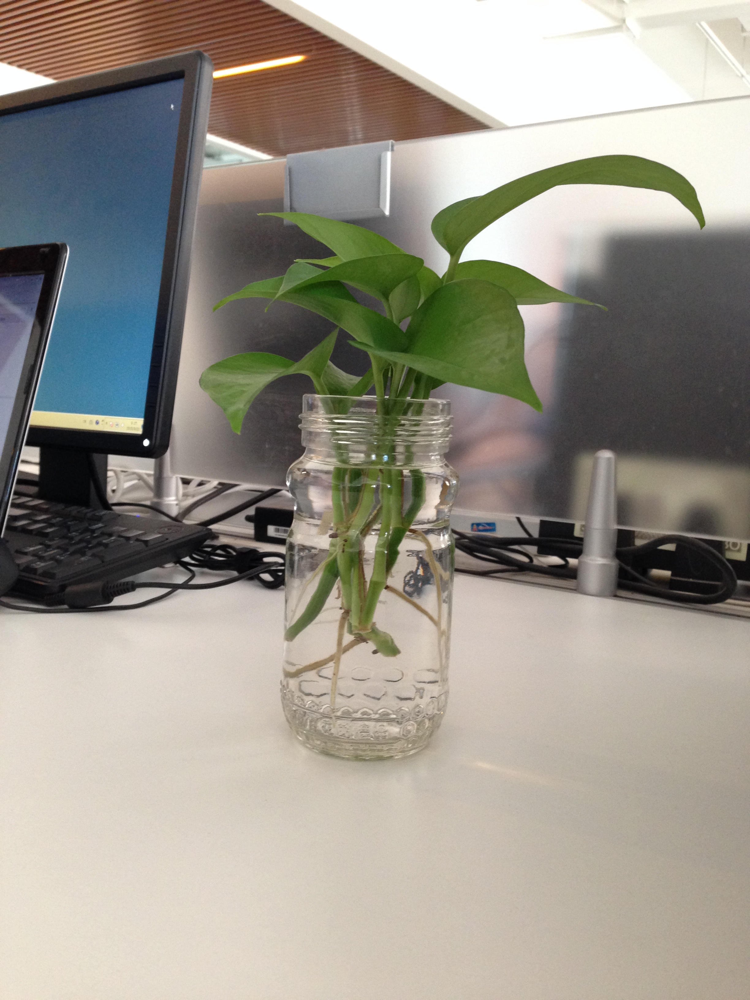

1. 派生选择器
晓看红湿处，花重锦官城。-杜甫
伤情处、高城望断，灯火已黄昏
后记：功夫应在诗外
2. id选择器
3. 类选择器
This heading will be center-aligned
| 排名 | 联赛 | 国家 |
| 1 | 西班牙甲级联赛 | 西班牙 |
| 2 | 巴克莱超级联赛 | 英格兰 |
4. 文本
说班婕妤应以《怨歌行》开篇，说杨贵妃更应该拿《长恨歌》来作题，可是不，
有了纳兰容若的一句“人生若只如初见”，一切有了开始存在的理由。
5. 列表
6. 轮廓
她言道：
“贤圣之君皆有名臣在侧，三代末主乃有嬖女。”
7. 定位
This is a Heading

一些文本。一些文本。一些文本。一些文本。一些文本。一些文本。
如果元素中的内容超出了给定的宽度和高度属性，
overflow 属性可以确定是否显示滚动条等行为。
这个属性定义溢出元素内容区的内容会如何处理。
如果值为 scroll，不论是否需要，用户代理都会提供一种滚动机制。
因此，有可能即使元素框中可以放下所有内容也会出现滚动条。
默认值是 visible。
这个属性定义溢出元素内容区的内容会如何处理。
如果值为 scroll，不论是否需要，用户代理都会提供一种滚动机制。
因此，有可能即使元素框中可以放下所有内容也会出现滚动条。
默认值是 visible。
Link one
8. 浮动